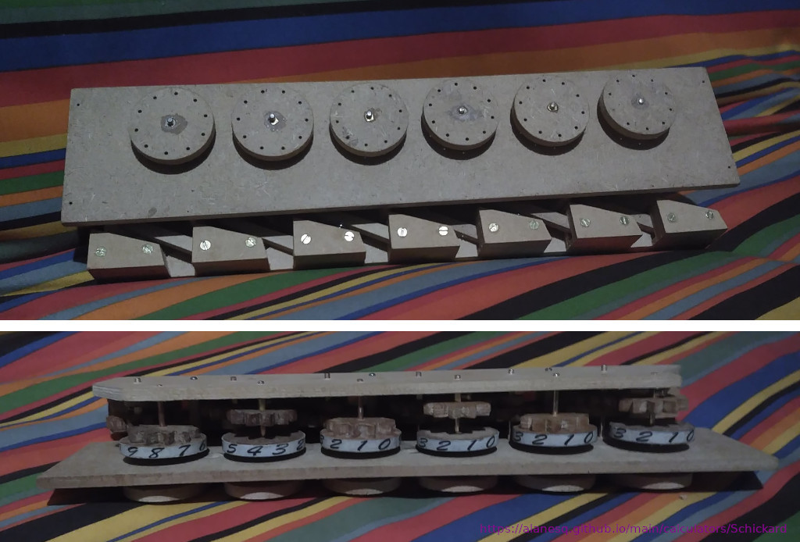
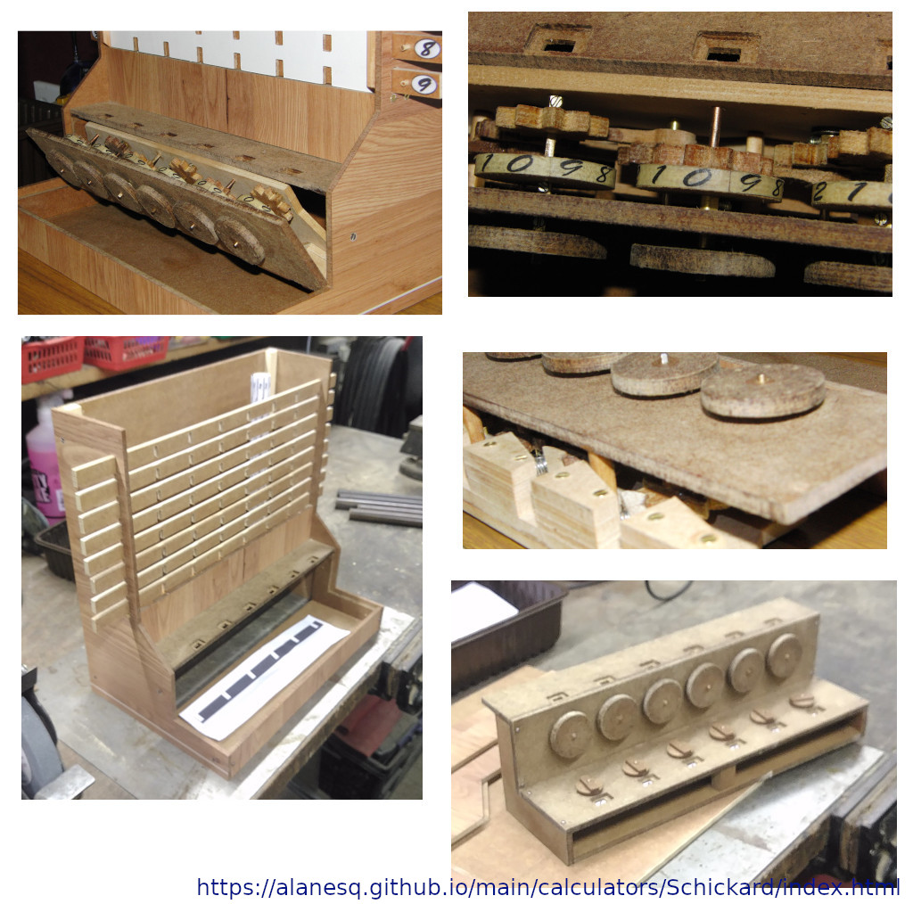

Alan's Schickard Calculator Page
My home made Schickard Calculator
As with most of my projects, it was a sudden and ill thought through decision to do it and rather than study or plan first what I intend to do I just jump in and make a start, so this is not historically correct etc. but is loosly based on information kindly provided by Jens Puhle HERE and adapted to be easy/cheap for me to build using materials easily available (mostly MDF) and using my home made CNC router.I first learned of the existence of the Schickard Calculator on 10th November and on 29th I had finished building my own which has to be some kind of record? ;-)
My collection of old mechanical calculators




Discovering the correct shape for the indexing arms was crucial for the carry mechanism to function effectively. Although, when carrying across multiple wheels, some manual intervention may be required. I believe this is a common occurrence in these types of machines, as observed in other videos. This is not a problem though as it is easy to identify which wheels need a nudge to reach the next digit.
If you're interested, I can send you the drawings used to create this mechanism on my CNC machine via email. These are just simple Inkscape files, which were then converted to Gcode using JScut. I used brass coated welding rods for the axles, and I was very pleased with my idea to utilize electrical block connector inserts to attach the gear wheels to the axles.
I was very pleased with the way the adder unit worked out, there are several things I could improve to the rest of it, mainly due to my having no plan as I built it, just working it out as I went along. The windows to the Napiers Bones are too small for starters...
A video I made when first starting to test out the concept.
See a video of a gear being cut on my CNC router
A replica which was built in 1957
My collection of old mechanical calculators